Projects
Photos from our galleries (tap one to see it larger), then our register as we keep it: 55 jobs, most of them private villas around Doha, plus schools, hotels, QP sites and a TV channel.
Where we've worked
- Al-Rayyan
- Duhail
- Mamoura
- Dafna
- Salwa
- Al Wakra
- Al Wukair
- Abu Hamour
- Kharatiyat
- West Bay
- Airport Road
- Dukhan
- Umm Said
- Al Khor
- Ras Laffan
- Najadah
From our galleries

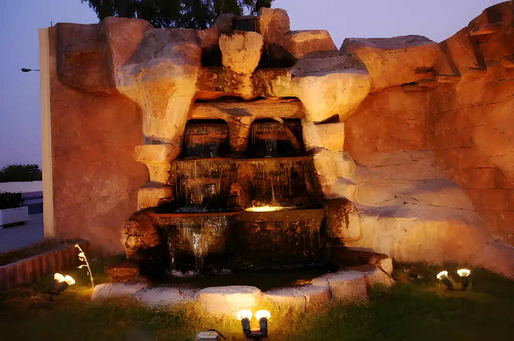
Rock waterfall wall at night
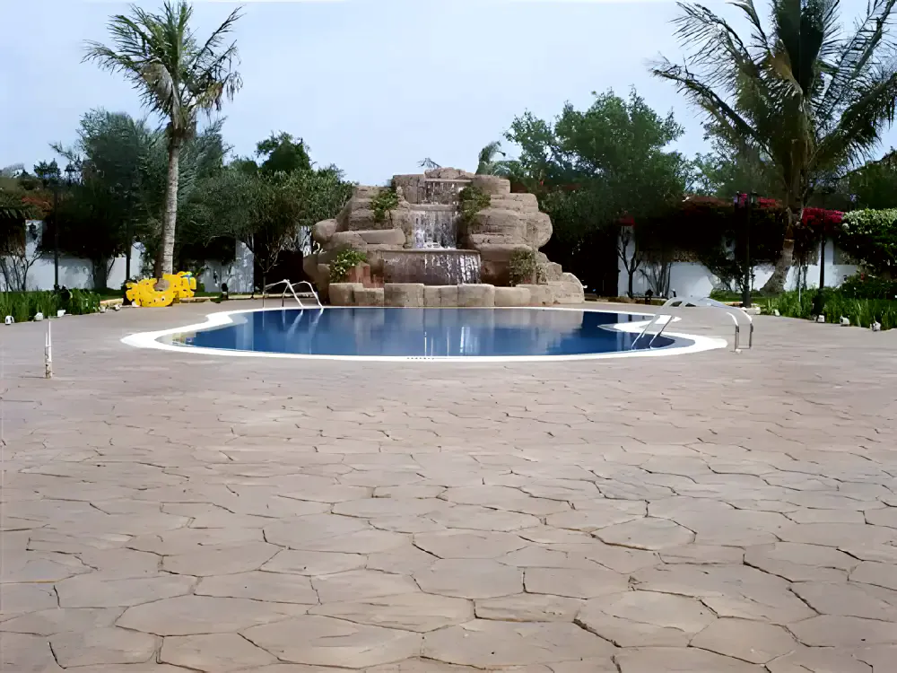
Stamped deck and rock waterfall
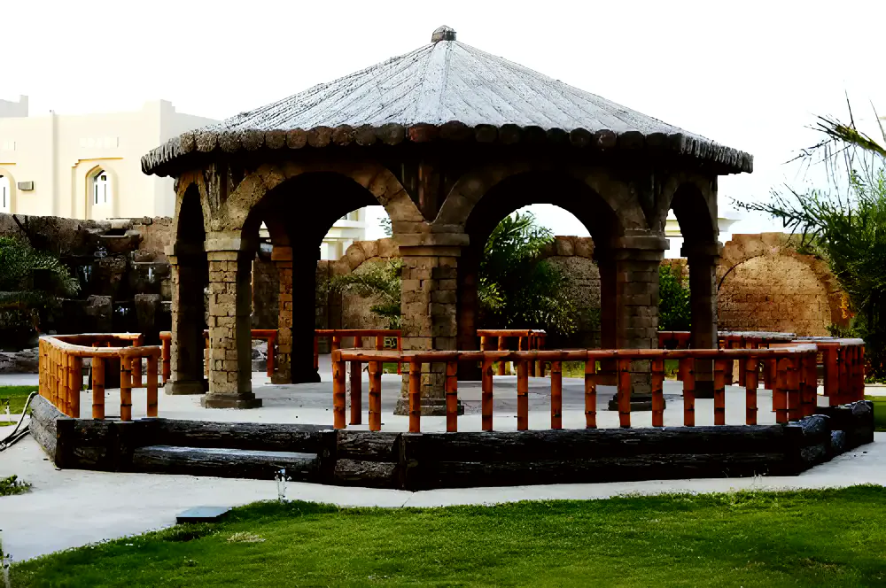
Gazebo and railings Rock waterfall
Rock waterfall Diamond pattern floor
Diamond pattern floor
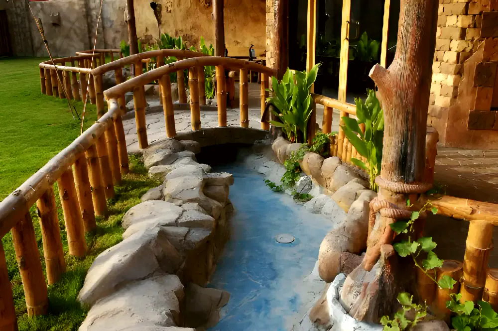
Rock stream and bridge Lagoon pool and falls
Lagoon pool and falls
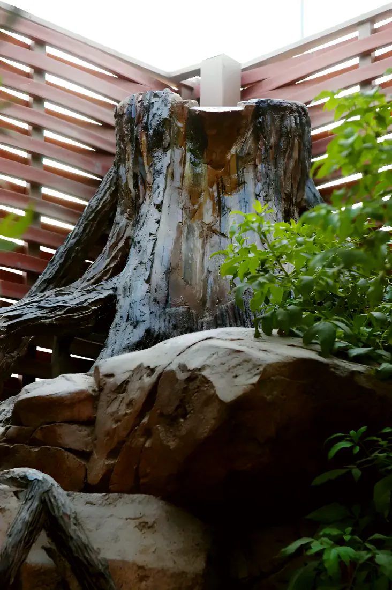
Carved tree trunk
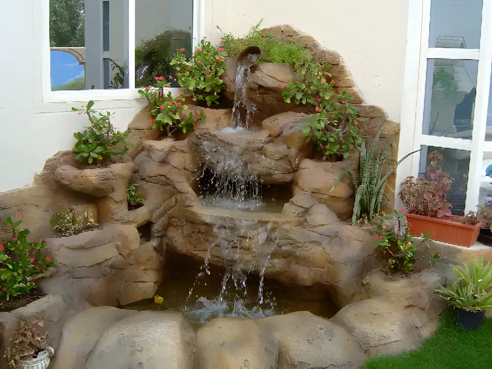
Garden falls Courtyard panels
Courtyard panels Garden majlis
Garden majlis
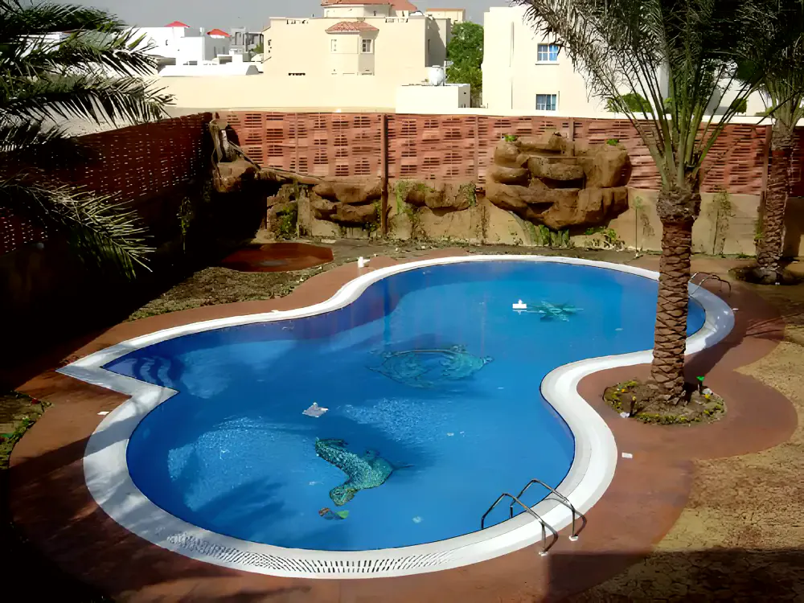
Pool and stamped deck Well at night
Well at night
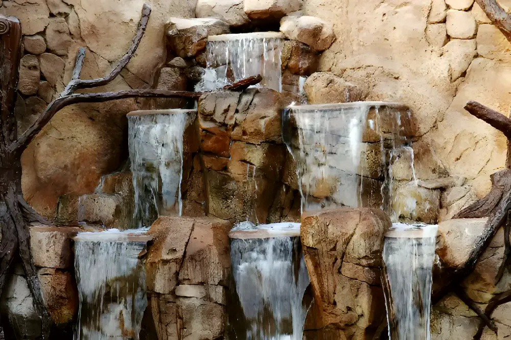
Cascade wall
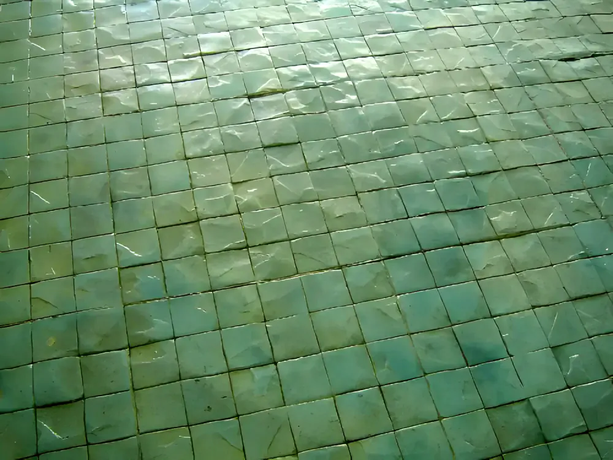
Slate-green tile pattern Pool among the palms
Pool among the palms Gazebo
Gazebo Arched doors in carved rock
Arched doors in carved rock
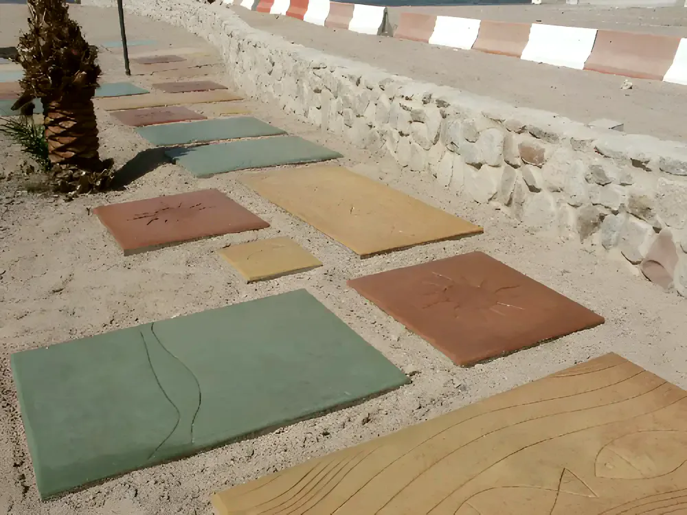
Coloured stepping slabs Bridge over the pool
Bridge over the pool Garden corner
Garden corner Villa forecourt
Villa forecourt
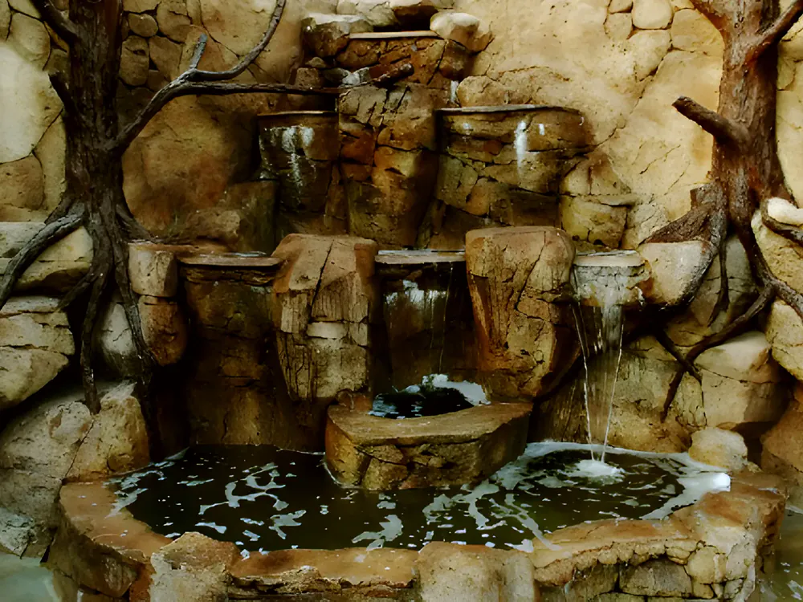
Tree-root falls Pool and painted wall
Pool and painted wallThe register
All 55 jobs as we list them. The filters above work on the register too.
55 projects match
| No. | Client | Work | Place |
|---|---|---|---|
| 01 | Najadah roundabout | Stamped concrete | Najadah |
| 02 | Ali Abdulrahman Ali Ahmad | Waterfall, stamped concrete | Qatar |
| 03 | Adel Al Hail Villa | Waterfall, barbecue, stamped concrete | Qatar |
| 04 | Mohammed Al-Okkar Villa | Waterfall, stamped concrete | Qatar |
| 05 | Ali Al Maliki Villa | Waterfall, barbecue, stamped concrete | Qatar |
| 06 | Mubarak Al Nasr Villa | Waterfall, renovation, stamped concrete | Qatar |
| 07 | Yousef Hassan Villa | Stamped concrete | Qatar |
| 08 | Hassan Al-Nuaimi | Lagoon boulders, bridge railing and floor | Qatar |
| 09 | Mohammed Al Mosalamany | Stamped concrete | Qatar |
| 10 | Abdulaziz Abdullah Turki Al Subaie | Waterfall, stamped concrete, barbecue, stone face | Qatar |
| 11 | Pergola Green House | Construction of waterfall | Qatar |
| 12 | Mr. Ibrahim Noor | Construction of planters & stamped concrete | Qatar |
| 13 | Sheikh Khalid Bin Jassim Complex | Stamped concrete and stone face | Qatar |
| 14 | Abdullah Al Ghanem | Stamped concrete, stone face, pergola, waterfall | Qatar |
| 15 | Naser Al Ansari | Stamped concrete | Qatar |
| 16 | Abdulhadi Al Ahbabi | Tent, stamped concrete, stone face | Qatar |
| 17 | Al Jaidah Farm | Construction of waterfall at Ras Laffan | Ras Laffan |
| 18 | Sumaya Salem Al Harthy | Stone face | Qatar |
| 19 | Sheikh Khalid Bin Thani Al Sharqiun | Stamped concrete | Qatar |
| 20 | Dr. Muner Al Qatami | Waterfall | Qatar |
| 21 | Mohammed Al Raeesi | Planters, waterfall & stamped concrete | Qatar |
| 22 | Sheikh Mansour Al Thani | Stamped concrete, waterfall | Qatar |
| 23 | Al Seal Contracting – 18 villas | Construction of waterfall | Qatar |
| 24 | Mr. Basem Al-Aker Villa | Stamped concrete, waterfall | Qatar |
| 25 | Choueifat School | 1,200 m² stamped concrete | Qatar |
| 26 | Al Muftah Company for Al Shamlan Project | Stamped concrete for villa at Al-Rayyan | Al-Rayyan |
| 27 | Ashrof Al Ali | Waterfall and stone face for villa at Al-Rayyan | Al-Rayyan |
| 28 | Naser Al Attiya villa | Stone face, stamped concrete for villa at Mamoura | Mamoura |
| 29 | Samir Abdulrazaq | Waterfall for villa at Salwa | Salwa |
| 30 | Majed Al Naimi | Stamped concrete for villa at Duhail | Duhail |
| 31 | Emjed Al Jumaila Villa | Stamped concrete, waterfall, stone face for villa at Duhail | Duhail |
| 32 | Mohammed Ali Rashid Al Asiri Villa | Stamped concrete for villa at Mamoura | Mamoura |
| 33 | Khalid Ali Al Badi | Stone face, stamped concrete for villa at Al-Rayyan | Al-Rayyan |
| 34 | Amer Al Nus | Stone face with barbecue stand | Qatar |
| 35 | Khalil Jabor Villa | Waterfall for villa at Airport Road | Airport Road |
| 36 | Four Seasons Hotel, for Construction Development Co. | Stamped concrete at the Four Seasons Hotel, West Bay | West Bay |
| 37 | Sheikh Naser Al-Thani | Softscape & hardscape work for villa at Al Wukair | Al Wukair |
| 38 | Sheikh Hamad Al-Thani | Softscape & hardscape work for villa at Al Wakra | Al Wakra |
| 39 | Mr. Mohammed Al-Sowaidi | Stone face & stamped concrete for villa at Kharatiyat | Kharatiyat |
| 40 | Mr. Abdulrahman Al Maslamani | Stamped concrete work for villa at Dafna | Dafna |
| 41 | Abdullah Al Malki | Stamped concrete for villa at Naser St. | Naser St. |
| 42 | Al Mamoon Swimming Pool | Construction of waterfall at West Bay | West Bay |
| 43 | HMC Al Khor | Decorative painting work | Al Khor |
| 44 | Mansour Al-Muslah | Hardscaping and softscaping work at villa in Al-Rayyan | Al-Rayyan |
| 45 | QP Umm Messaied | Construction of artificial waterfall | Umm Said |
| 46 | QP Dukhan | Construction of artificial waterfall | Dukhan |
| 47 | Sheikh Khalid Al-Thani | Construction of well & bird’s cage | Qatar |
| 48 | Dr. Nabil Al Salem | Construction of artificial waterfall & stamped concrete works | Qatar |
| 49 | RAMACO co. | Stamped concrete works | Qatar |
| 50 | Emjed Al Jumaily Villa at Abu Hamour | Stamped concrete works | Abu Hamour |
| 51 | Khalid Naser | Stamped concrete works | Qatar |
| 52 | Construction Development | Stamped concrete | Qatar |
| 53 | Al Jazeera Channel TV | Artificial rockery works, landscaping | Qatar |
| 54 | Ali Hassan Boanin | Soft & hard landscaping | Qatar |
| 55 | ARD Al-Khair | Stamped concrete works | Qatar |
- Telephone
- 4699972
- info@althulathi.com
- Fax
- 4699973
- Post
- P.O. Box 15401Doha, State of Qatar